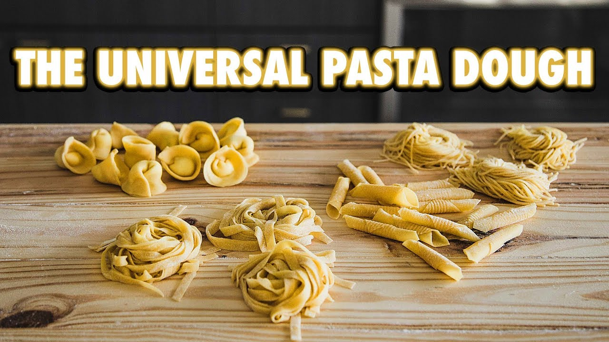

Handmade Pasta

If you've ever wanted to make fresh pasta at home, then you've come to right place. Consider this a basic homemade pasta guide....
Ingredients
- 3 cups (480g) 00 type flour
- 5 large whole eggs
- 1/2 tsp (2g) fine sea salt
- 1 tsp (5g) extra virgin olive oil
Instructions
- Add 3 cups of "oo" zero flour and salt to a work surface. Create a well using your hands in the center of the mound.
- Crack five large whole eggs into the well you just created. Drizzle in a teaspoon of live oil.
- Using a fork, start whisking the eggs until they come together cohesively. Once the eggs have come together, keep whisking but slowly add in bits of flour. Be careful not to make a whole or dent othersize your eggs will run out
- Once it starts to become dough-like, start using your hands to mix. Once fully combined, knead the dough for 5-10 minutes until it is silky smooth. Once kneaded, wrap in plastic wrap and let it sit at room temperature for at least an hour.